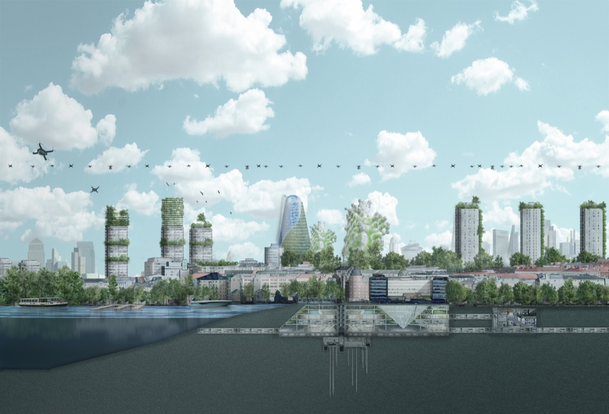

New Futurama
The original 1939 “Futurama” exhibit sold the world on car-centric, low-density urbanism — a vision still being replicated today. Demos Helsinki and MaaS Global asked SPIN Unit to imagine what a “New Futurama” would look like if it started from climate response instead.
Developed as a thought-leadership and business-development project for MaaS Global (the company behind the Whim mobility app), with a staged plan to build a consortium of funding partners and explore a physical/mixed-reality exhibition — including early-stage discussions about a possible installation at Dubai Expo 2020.
Built around four themes — Retrofit (upgrade the existing city rather than build new), Vertical (push new infrastructure into vertical and aerial space, freeing land for nature), Multilocal (mobility becomes the central driver of urban design), and Beta Space (a city that’s never finished, run more like a service than a fixed plan). These converge in the “Supernode” concept — illustrated with a real Helsinki case study using LIDAR-based 3D city modelling and photorealistic scenario montages.
Developed through late 2019 into early 2020 as a staged concept deck, with a defined path toward prototype funding and an exhibition-scale installation.
{kind=link}

Open full size ↗